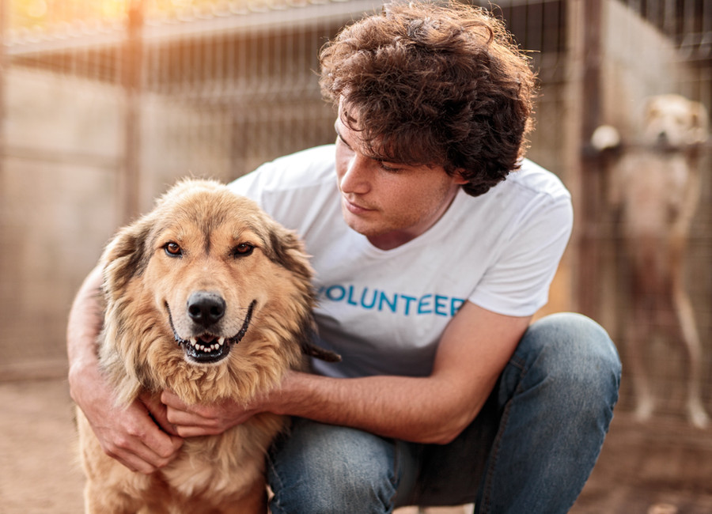
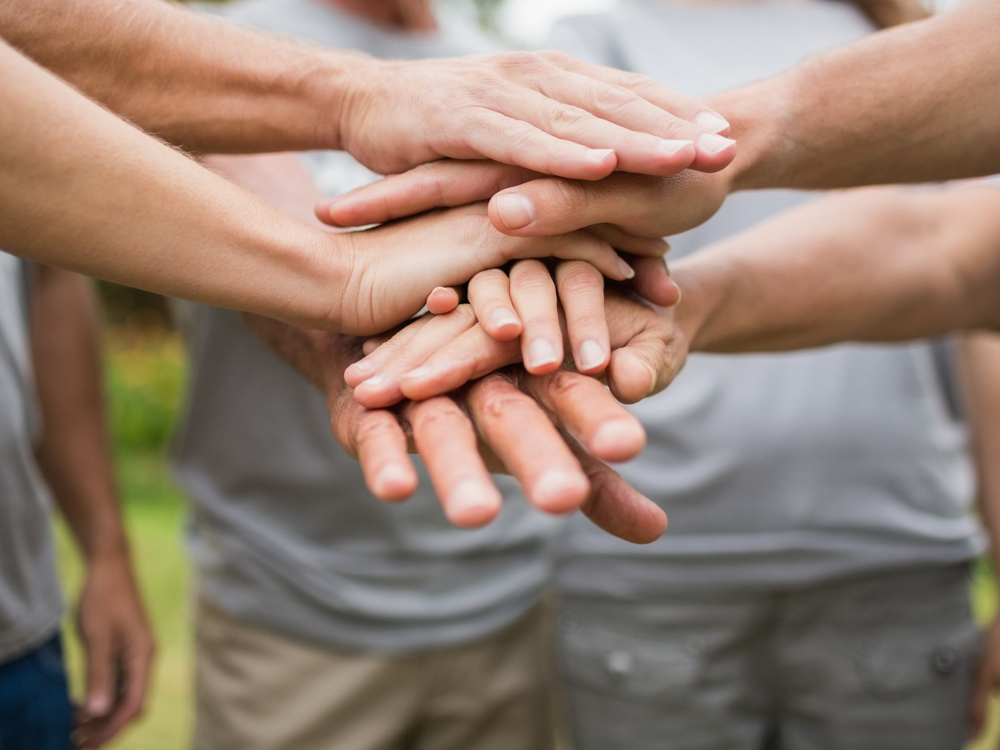
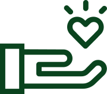

Hazte voluntario
El voluntariado lo formamos personas comprometidas con los animales que también atendemos nuestras obligaciones diarias. Cuantos más seamos, más casos podremos atender.
Más informaciónHay muchas maneras de formar parte de Grupo Nebak. Elige la que mejor encaje contigo.

En Grupo Nebak puedes ayudar con tu tiempo, tu casa o tu apoyo económico. Cada forma de colaborar suma y todas son necesarias para seguir cuidando de los animales de Irún.
Elige la opción que mejor encaje contigo. Si tienes dudas, escríbenos y buscamos juntas la manera de encajarlo.

El voluntariado lo formamos personas comprometidas con los animales que también atendemos nuestras obligaciones diarias. Cuantos más seamos, más casos podremos atender.
Más información
Una casa de acogida puede ser la diferencia entre la vida y la muerte para muchos gatos. La acogida es temporal y los gastos veterinarios corren a cargo de la protectora.
Cómo acoger
Donación puntual, cuota de socio, Teaming o material para mercadillos. Todo se destina al cuidado de los animales.
Ver opciones